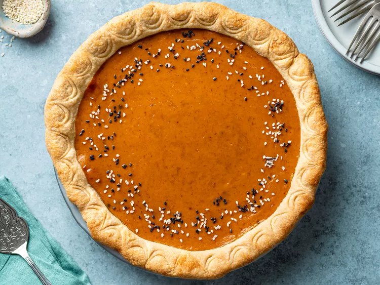

Back to Home
Pumpkin Tahini Pie

A delicous pumpkin pie recipe, combining nutty, toasty, creamy, and earthy into one flavor.
Ingredients
- 1 (9 inch) unbaked pie crust
- 1 (15 ounce) can pumpkin puree
- 1 (14 ounce) can sweetened condensed milk
- 2 large eggs
- 2 teaspoons pumpkin pie spice
- ¼ cup tahini
- ¼ cup heavy cream
- 1 teaspoon vanilla extract
- ¼ teaspoon salt
- 1 teaspoon toasted sesame seeds (Optional)
Steps
- Preheat the oven to 425 degrees F (220 degrees C).
- Place prepared pie crust onto a baking sheet.
- In a bowl, whisk together pumpkin, sweetened condensed milk, eggs, pumpkin pie spice,
tahini, heavy cream, vanilla, and salt until smooth and combined. Pour into prepared pie crust.
- Place pan into oven and bake for 15 minutes.
Reduce oven temp to 350 degrees F (175 degrees C) and continue baking until pie
is set but the middle is still slightly jiggly, 30 to 35 minutes.
Remove from the oven and allow pie to cool completely, at least 4 hours.
- If desired, garnish with toasted sesame seeds before serving.